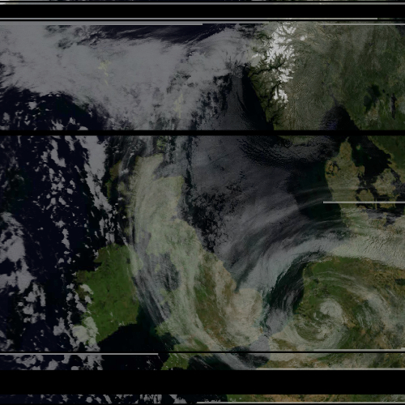
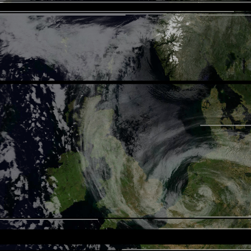
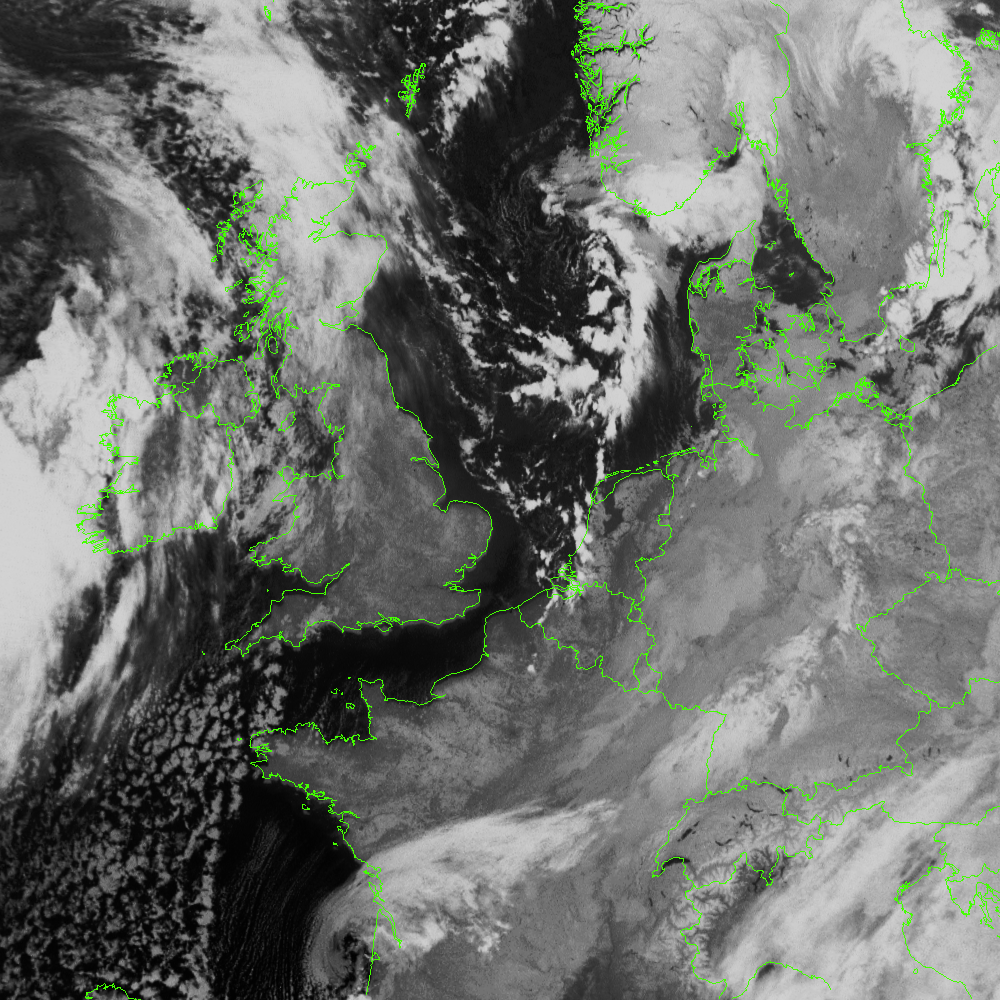
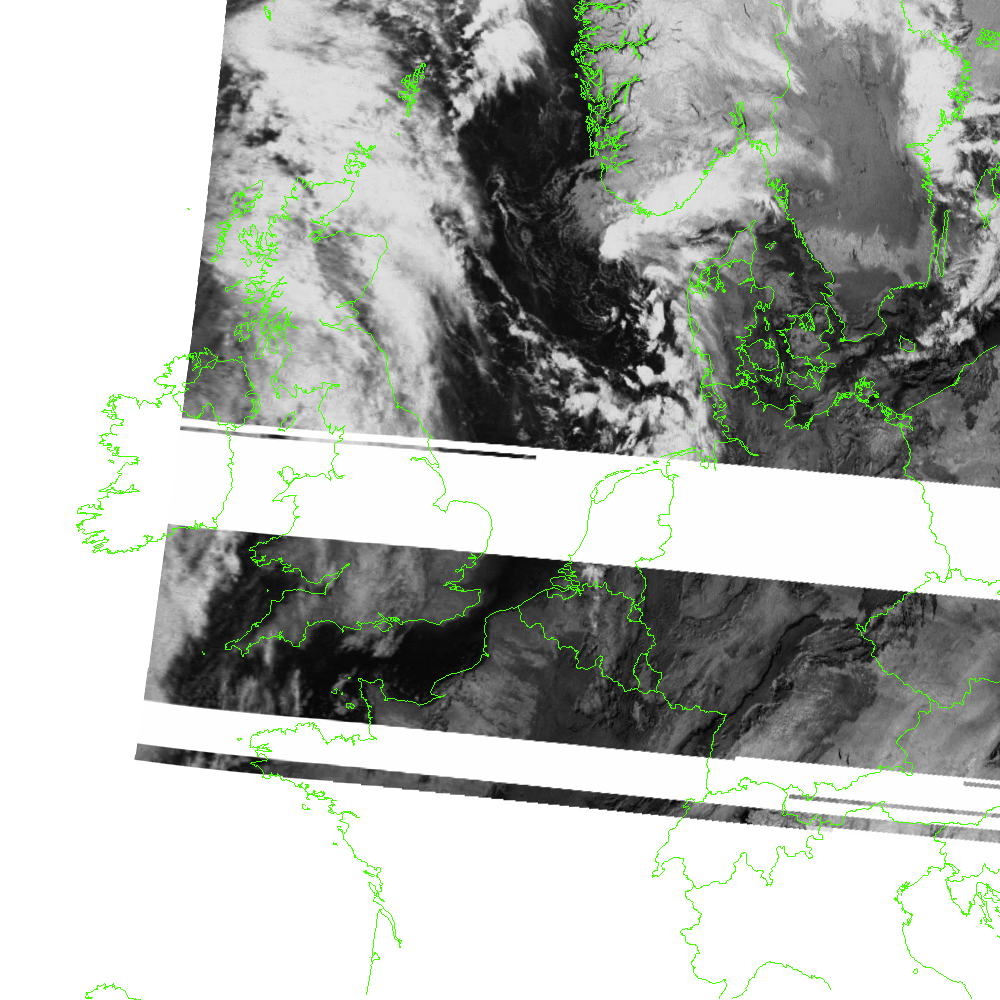
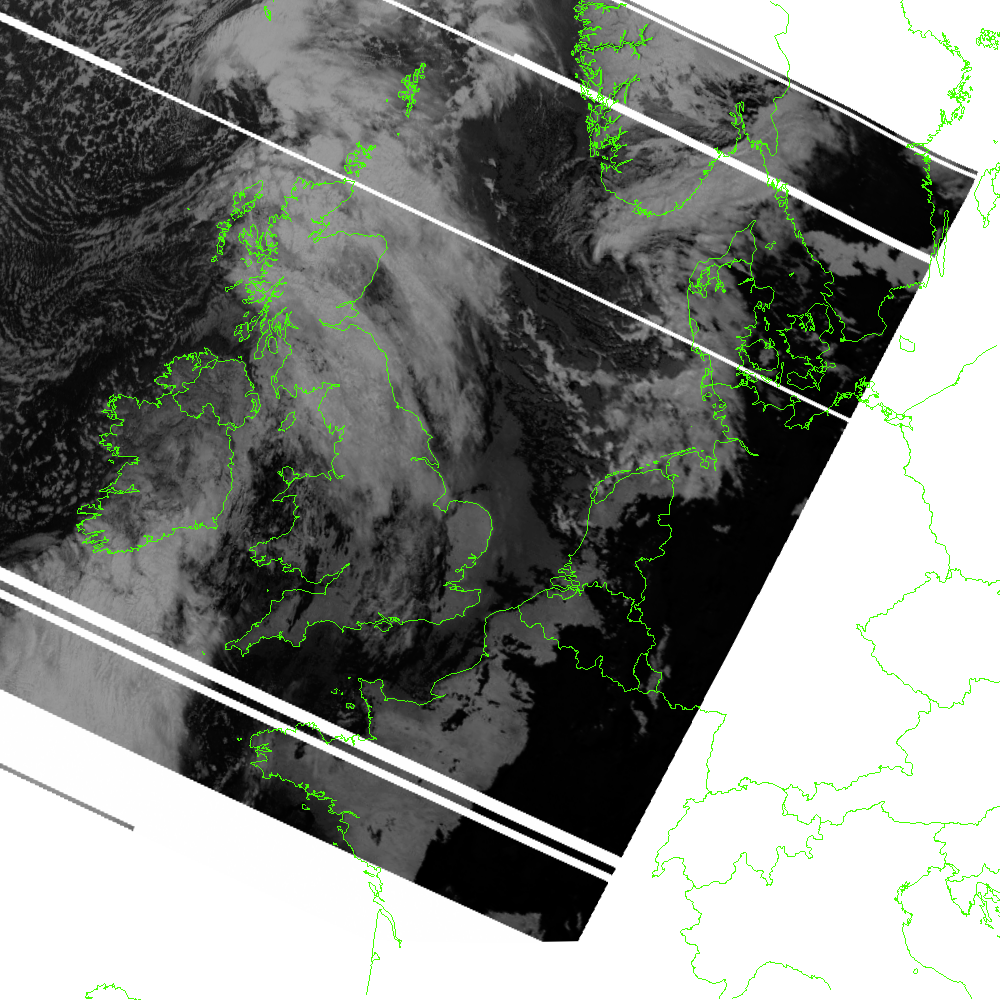
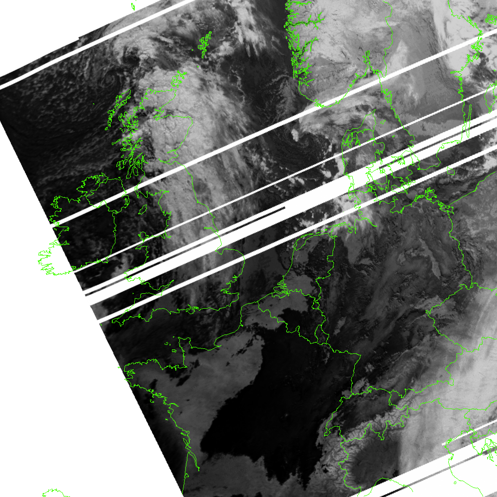
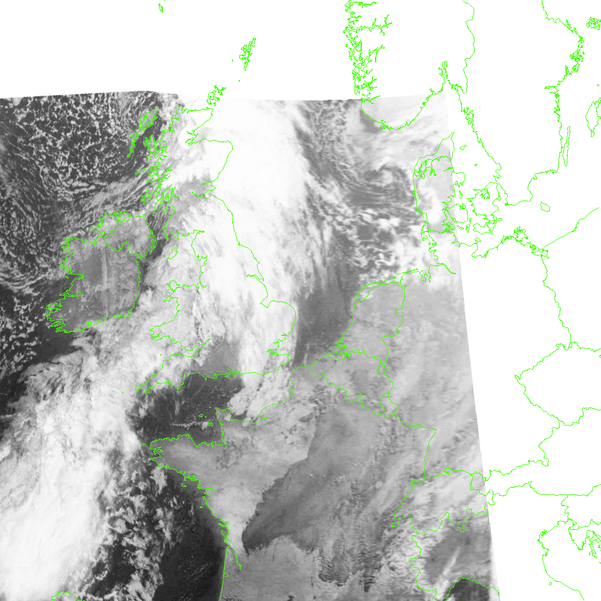
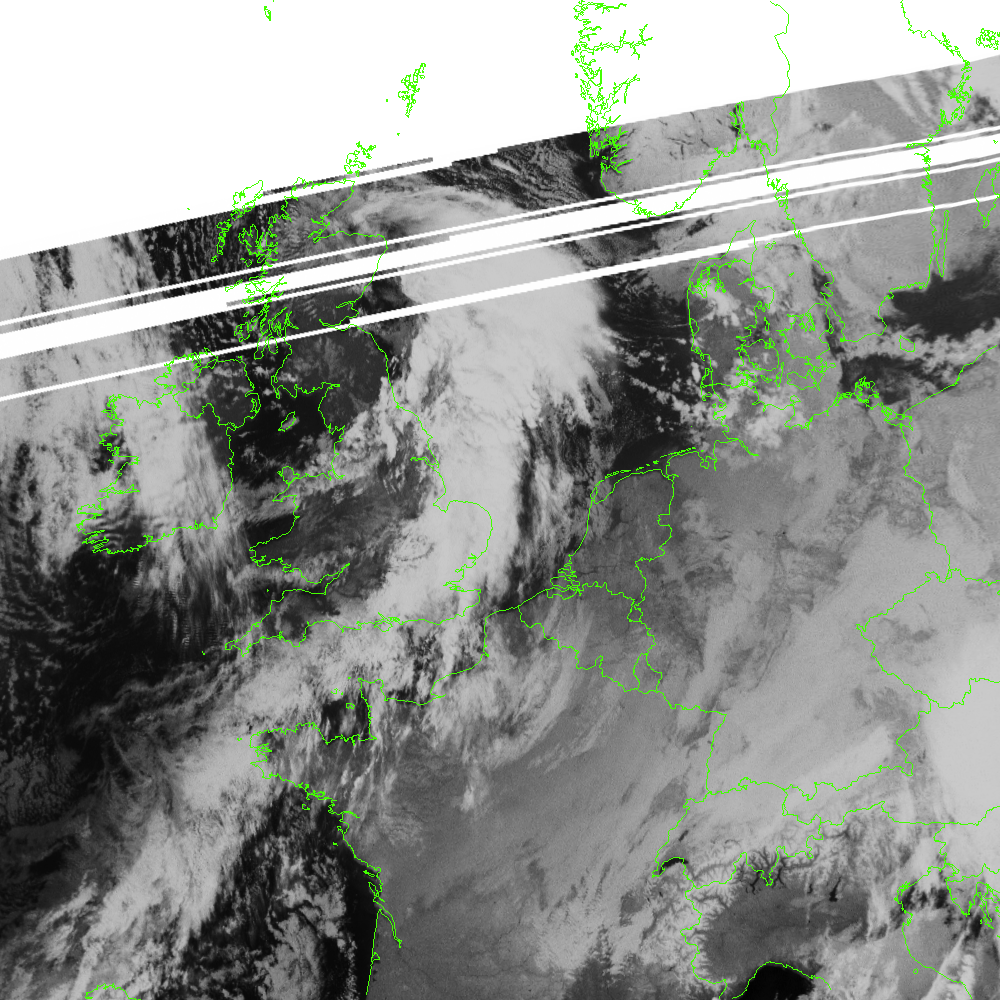

February
Sample

 

January
06
     About the Page
This page is meant to be a place to show images I have taken from weather satellites. There have been some... technical difficulties shall we say? When the dish rotator is finished, this will automatically display the images that have been downloaded, decoded, and cropped beforehand!
For now this page will show some old images from early january 2026, as a showcase of whats to come :)
and if Elektro L3 gets moved later this year, there will be some geostationary pictures too!
(a better explaination of everything can be found here)
About the Images
Whats Channel 4?
The METEOR Series of satellites transmit on six different channels. The LRPT Downlink (which this page's images were decoded from) sends down three of these. During the summer they send 1, 2, and 3, but during winter theres much less light over 24 hours, so channel 4 is sent instead of 3. I'm not going to pretend I know what channel 4 is, but it works at night so I'm happy.